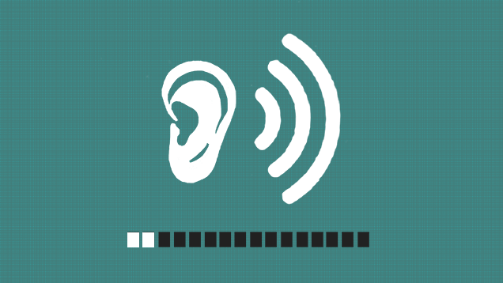

Hearaid NGO Animal Sound Identification.
Kindly play different sounds of animals like barking, meowing, howling and frog clatters for the website to identify, with the help of Teachable Machine.
You will be able to see the animal here :
